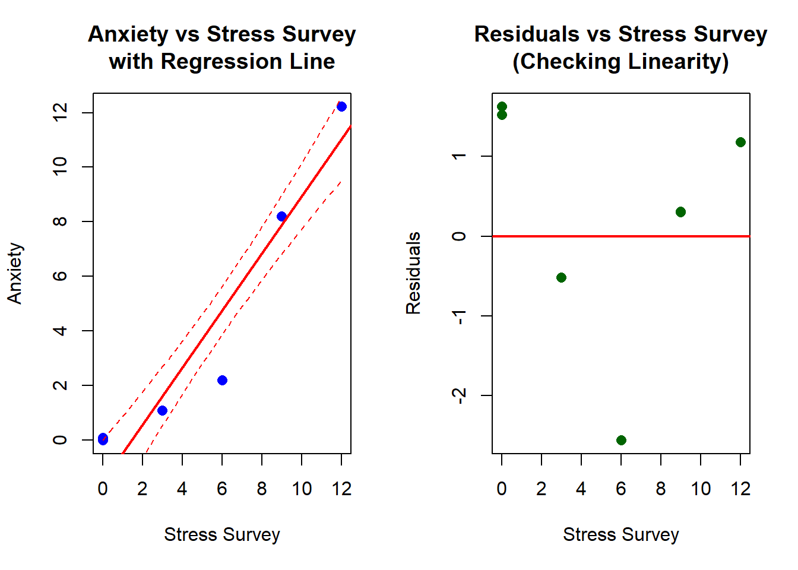
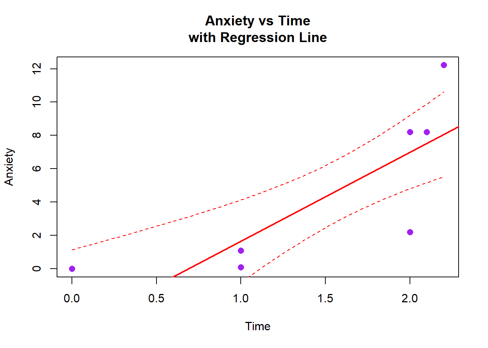

Stress StressSurvey Time Anxiety
1 0 0 0.0 0.00
2 0 0 1.0 0.10
3 0 0 1.0 0.10
4 1 3 1.0 1.10
5 1 3 1.0 1.10
6 1 3 1.0 1.10
7 2 6 2.0 2.20
8 2 6 2.0 2.20
9 2 6 2.0 2.20
10 8 9 2.0 8.20
11 8 9 2.0 8.20
12 8 9 2.1 8.21
13 12 12 2.2 12.22
14 12 12 2.2 12.22
15 12 12 2.2 12.22Garbage Can Regression Challenge
Garbage Can Regression Challenge
Bivariate Regression Analysis
Regression of Anxiety on Stress Survey
Call:
lm(formula = Anxiety ~ StressSurvey, data = observDF)
Residuals:
Min 1Q Median 3Q Max
-2.558 -0.517 0.301 1.180 1.624
Coefficients:
Estimate Std. Error t value Pr(>|t|)
(Intercept) -1.5240 0.7069 -2.156 0.0504 .
StressSurvey 1.0470 0.0962 10.883 6.68e-08 ***
---
Signif. codes: 0 '***' 0.001 '**' 0.01 '*' 0.05 '.' 0.1 ' ' 1
Residual standard error: 1.581 on 13 degrees of freedom
Multiple R-squared: 0.9011, Adjusted R-squared: 0.8935
F-statistic: 118.4 on 1 and 13 DF, p-value: 6.681e-08Regression Output Interpretation
R-squared: 0.9011 Adjusted R-squared: 0.8935 F-statistic: 118.4474 p-value: 6.6812e-08 Reference to Saved Plot
✓ Plot successfully saved as: anxiety_stress_regression.png
File size: 7.45 KB
Full path: C:\Users\13024\OneDrive - University of Delaware - o365\Class\BUAD442\buad442Fall2025\garbageCanRegressionChallenge\anxiety_stress_regression.png Estimated Coefficients
Estimated Coefficients:Intercept (β₀): -1.524 StressSurvey (β₁): 1.047
Regression Equation: Anxiety = -1.524 + 1.047 × StressSurveyComparison with True Relationships
COMPARISON: Estimated vs True Relationships==========================================True generating equation: Anxiety = Stress + 0.1 × TimeEstimated equation: Anxiety = -1.524 + 1.047 × StressSurveyCoefficient Analysis:--------------------Intercept: True (in generating model): 0 Estimated: -1.524 Difference: -1.524 Slope coefficient: True (Stress coefficient): 1.0 Estimated (StressSurvey): 1.047 Difference: 0.047 Note: We're comparing StressSurvey coefficient to true Stress coefficientStressSurvey values are 3x larger than Stress values in this datasetSo the estimated coefficient should be approximately 1/3 = 0.3333 Actual ratio: 1.047 Scatter Plot Analysis and Commentary

png
2 Fit Assessment and Commentary
REGRESSION FIT ANALYSIS:========================1. GOODNESS OF FIT: R-squared: 0.9011 ( 90.1 % of variance explained) Adjusted R-squared: 0.8935 ✓ Excellent fit - model explains most of the variance
2. STATISTICAL SIGNIFICANCE: F-statistic: 118.4474 p-value: 6.6812e-08 ✓ Highly significant relationship (p < 0.001)
3. COEFFICIENT SIGNIFICANCE: StressSurvey coefficient p-value: 6.6812e-08 ✓ StressSurvey coefficient is statistically significant
4. POTENTIAL ISSUES: • Omitted variable bias: Time variable is missing from the model • Variable scaling: Using StressSurvey instead of true Stress variable • Small sample size: Only 15 observations • Perfect linear relationship: Data appears artificially generated
5. RESIDUAL ANALYSIS: Mean of residuals: 0 (should be ~0) Standard deviation of residuals: 1.5233 ✓ Residuals centered around zeroQuestion 3: Bivariate Regression of Anxiety on Time
Regression of Anxiety on Time
Call:
lm(formula = Anxiety ~ Time, data = observDF)
Residuals:
Min 1Q Median 3Q Max
-4.8010 -1.5605 -0.5605 2.4395 4.1508
Coefficients:
Estimate Std. Error t value Pr(>|t|)
(Intercept) -3.680 2.233 -1.648 0.12330
Time 5.341 1.305 4.093 0.00127 **
---
Signif. codes: 0 '***' 0.001 '**' 0.01 '*' 0.05 '.' 0.1 ' ' 1
Residual standard error: 3.323 on 13 degrees of freedom
Multiple R-squared: 0.563, Adjusted R-squared: 0.5294
F-statistic: 16.75 on 1 and 13 DF, p-value: 0.00127Estimated Coefficients for Time Model
Estimated Coefficients (Anxiety ~ Time):======================================Intercept (β₀): -3.6801 Time (β₁): 5.3406
Regression Equation: Anxiety = -3.6801 + 5.3406 × TimeComparison with True Relationship
COMPARISON: Estimated vs True Relationships (Time Model)=======================================================True generating equation: Anxiety = Stress + 0.1 × TimeEstimated equation: Anxiety = -3.6801 + 5.3406 × TimeCoefficient Analysis:--------------------Intercept: True (in generating model): 0 Estimated: -3.6801 Difference: -3.6801 Time coefficient: True: 0.1 Estimated: 5.3406 Difference: 5.2406 Model Fit: R-squared: 0.563 ( 56.3 % of variance explained)
IMPORTANT NOTE:This model omits the Stress variable, which is a major componentof the true relationship. This creates omitted variable bias.The Time coefficient may be biased because Stress and Time arecorrelated in the data generation process.Scatter Plot: Anxiety vs Time

png
2 Time Model Fit Assessment and Commentary
TIME MODEL FIT ANALYSIS:========================1. GOODNESS OF FIT: R-squared: 0.563 ( 56.3 % of variance explained) Adjusted R-squared: 0.5294 ⚠ Moderate fit - model explains some variance
2. STATISTICAL SIGNIFICANCE: F-statistic: 16.7509 p-value: 0.0012702 ✓ Very significant relationship (p < 0.01)
3. COEFFICIENT SIGNIFICANCE: Time coefficient p-value: 0.0012702 ✓ Time coefficient is statistically significant
4. COMPARISON WITH STRESS SURVEY MODEL: StressSurvey model R-squared: 0.9011 Time model R-squared: 0.563 → StressSurvey explains more variance than Time alone
5. POTENTIAL ISSUES: • OMITTED VARIABLE BIAS: Major issue - Stress variable is missing • True relationship: Anxiety = Stress + 0.1 × Time • This model only uses Time, ignoring the dominant Stress effect • Time coefficient may be biased due to correlation with omitted Stress • Small sample size: Only 15 observations • Limited Time variation: Time values range from 0 to 2.2
6. RESIDUAL ANALYSIS: Mean of residuals: 0 (should be ~0) Standard deviation of residuals: 3.2018 ✓ Residuals centered around zero
7. COEFFICIENT ACCURACY: True Time coefficient: 0.1 Estimated Time coefficient: 5.3406 Bias: 5.2406 ⚠ Coefficient estimate is significantly biasedQuestion 5: Multiple Regression of Anxiety on StressSurvey and Time
Multiple Regression Model
Call:
lm(formula = Anxiety ~ StressSurvey + Time, data = observDF)
Residuals:
Min 1Q Median 3Q Max
-1.3904 -0.9896 0.3288 0.6240 2.2912
Coefficients:
Estimate Std. Error t value Pr(>|t|)
(Intercept) 0.5888 1.0339 0.569 0.5795
StressSurvey 1.4269 0.1722 8.287 2.62e-06 ***
Time -2.7799 1.1111 -2.502 0.0278 *
---
Signif. codes: 0 '***' 0.001 '**' 0.01 '*' 0.05 '.' 0.1 ' ' 1
Residual standard error: 1.334 on 12 degrees of freedom
Multiple R-squared: 0.935, Adjusted R-squared: 0.9242
F-statistic: 86.32 on 2 and 12 DF, p-value: 7.538e-08Estimated Coefficients for Multiple Regression
Estimated Coefficients (Anxiety ~ StressSurvey + Time):=====================================================Intercept (β₀): 0.5888 StressSurvey (β₁): 1.4269 Time (β₂): -2.7799
Regression Equation: Anxiety = 0.5888 + 1.4269 × StressSurvey + -2.7799 × TimeComparison with True Relationship
COMPARISON: Estimated vs True Relationships (Multiple Regression)================================================================True generating equation: Anxiety = Stress + 0.1 × TimeEstimated equation: Anxiety = 0.5888 + 1.4269 × StressSurvey + -2.7799 × TimeCoefficient Analysis:--------------------Intercept: True (in generating model): 0 Estimated: 0.5888 Difference: 0.5888 StressSurvey coefficient: Expected (1/3 of true Stress coefficient): 0.3333 Estimated: 1.4269 Difference from expected: 1.0936 Time coefficient: True: 0.1 Estimated: -2.7799 Difference: -2.8799 Model Fit: R-squared: 0.935 ( 93.5 % of variance explained)
Model Comparison: StressSurvey only R-squared: 0.9011 Time only R-squared: 0.563 Multiple regression R-squared: 0.935 ✓ Multiple regression explains more variance than either single variable modelMultiple Regression Fit Assessment
MULTIPLE REGRESSION FIT ANALYSIS:================================1. GOODNESS OF FIT: R-squared: 0.935 ( 93.5 % of variance explained) Adjusted R-squared: 0.9242 ✓ Very good fit - model explains most of the variance
2. OVERALL MODEL SIGNIFICANCE: F-statistic: 86.3151 p-value: 7.5382e-08 ✓ Highly significant overall model (p < 0.001)
3. INDIVIDUAL COEFFICIENT SIGNIFICANCE: StressSurvey coefficient p-value: 2.6158e-06 Time coefficient p-value: 0.027816 ✓ StressSurvey coefficient is statistically significant ✓ Time coefficient is statistically significant
4. COEFFICIENT ACCURACY: StressSurvey coefficient bias: 1.0936 Time coefficient bias: -2.8799 ⚠ Some coefficients show significant bias
5. KEY INSIGHTS: • This model includes both variables from the true relationship • StressSurvey captures the main Stress effect (scaled by 1/3) • Time coefficient should be close to the true 0.1 value • This is the most complete model given the available variables